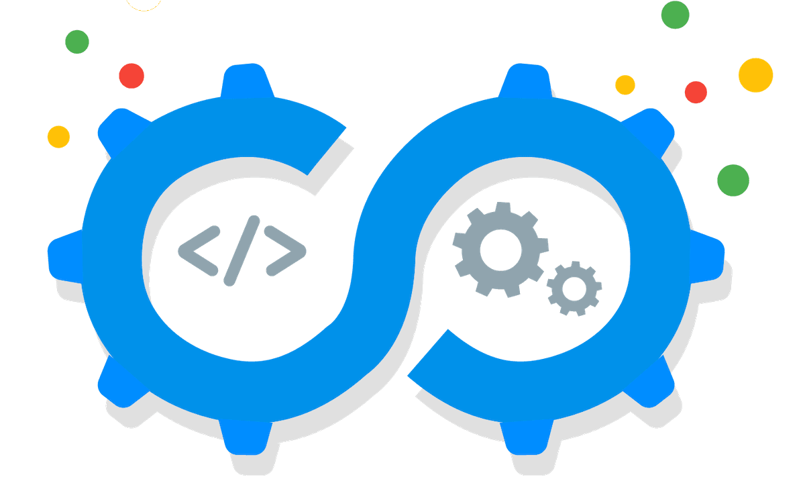
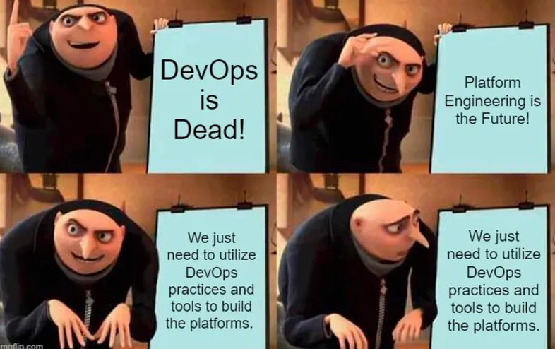

Do deploy manual ao Platform Engineering
Como chegamos aqui?
E agora?
Diego Morales

A linha do tempo
2001: O Manifesto Ágil
Em um Resort de Ski nos Estados Unidos, os pioneiros da agilidade escreveram ...
- Individuals and interactions over processes and tools
- Working software over comprehensive documentation
- Customer collaboration over contract negotiation
- Responding to change over following a plan
Mas a agilidade não acabou com o deploy manual. Naturalmente, ela causou atrito.
2009: DevOps
DevOps é o resultado do impacto da agilidade na disciplina de Operações
3 Ways of DevOps
- System Thinking
- Shorten Feedback Loops
- Continuous Learning and Experimentation
De volta para o futuro

Em 2016, em uma jovem Fintech no Rio de Janeiro ...
~2014: SRE
SRE is what happens when you ask a software engineer to design an operations function
Ben Treynor Sloss, fundador da SRE no Google
Princípios SRE
- Operations Is a Software Problem
- Manage by Service Level Objectives (SLOs)
- Work to Minimize Toil
- Automate This Year’s Job Away
- Move Fast by Reducing the Cost of Failure
- Share Ownership with Developers
- Use the Same Tooling, Regardless of Function or Job Title
De volta para o futuro 2

Em 2019, naquela mesma Fintech no Rio de Janeiro ...
Sobrecarga Cognitiva
Mas não é só um excesso de ferramentas ...
Muitos de nossos ambientes exigem alto contexto
~202x: Platform Engineering
Platform engineering is the discipline of designing and building toolchains and workflows that enable self-service capabilities for software engineering organizations in the cloud-native era. Platform engineers provide an integrated product most often referred to as an “Internal Developer Platform” covering the operational necessities of the entire lifecycle of an application.
Mas o que diabos a gente estava fazendo até agora?
A plataforma é um produto ...
... e seus usuários são clientes
(team topologies link)O caminho pavimentado
- Para reduzir o contexto,
- tornar fácil o caminho correto,
- e dar autonomia segura
um bom case no Twillio
Um novo landscape de ferramentas
Ou apenas um site de documentação.
E os profissionais?
Obrigado!
Diego Morales